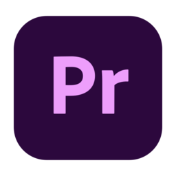
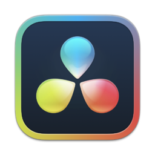
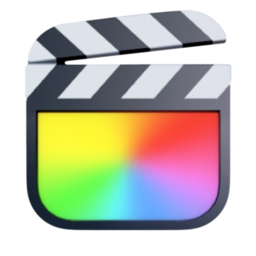

Перейти до заголовка Головної сторінки | Перейти до знімального процесу на сторінці зйомки
Монтаж відео — це етап, де окремі кадри перетворюються на цілісну історію. Правильний вибір програмного забезпечення визначає швидкість та якість роботи.
| Іконка програми | Посилання | Текст опису |
|---|---|---|
 |
Premiere Pro | Професійний індустріальний софт від компанії Adobe. Світовий стандарт для багатьох контент-мейкерів. |
 |
DaVinci Resolve | Найкраща у світі програма для колірокорекції та професійного грейдингу кінострічок. |
 |
Final Cut Pro | Блискавична швидкість роботи та вибір більшості професійних користувачів екосистеми macOS. |
| Кодек / Формат | Характеристики відеопотоку | |
|---|---|---|
| Ступінь стиснення даних | Фінальна якість картинки | |
| H.264 / MP4 | Дуже високий | Гарна (Стандарт для мережі Інтернет) |
| ProRes / MOV | Мінімальний (Raw-потік) | Максимальна (Для серйозного кіновиробництва) |